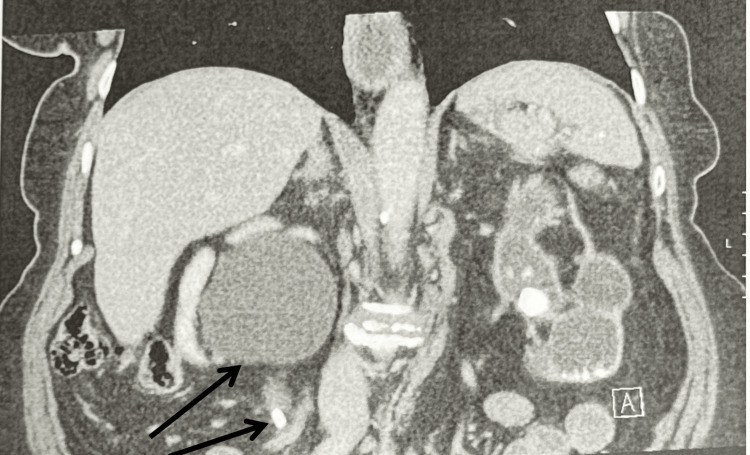
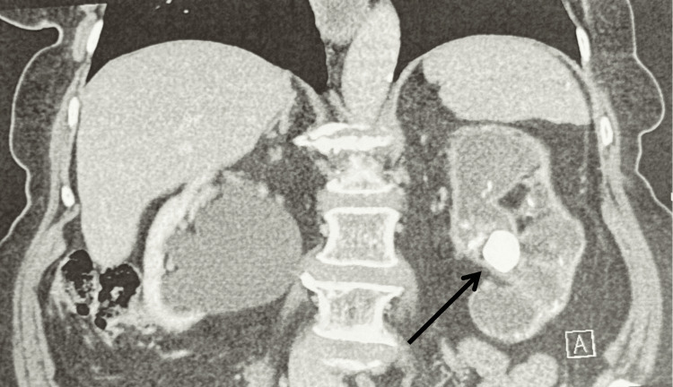

152 — Sỏi niệu, ứ nước & nhiễm trùng niệu trên / Stones, hydronephrosis & UTI
Tags: pattern:soi-nieu vung:he-nieu
Mức chắc chắn (certainty): tổng hợp y văn (literature synthesis) — nhóm tự biên từ y văn mở, chưa gắn ca nguyên văn đơn lẻ.
1. Tổng quan — sỏi cản quang + ứ nước + vỏ mỏng dần
- Sỏi > 90% cản quang trên CT không tiêm (axit uric là ngoại lệ không cản quang). TẠI SAO CT không tiêm là chuẩn sỏi: thấy sỏi + ứ nước + phù quanh mà không cần thuốc.
- Ứ nước: giãn bể thận + đài (nhện) + niệu quản trên sỏi; vỏ mỏng dần + không đau = tắc mạn mất chức năng (như thận trái 24 mm dưới đây).
- Ngưỡng: sỏi niệu quản > 6–7 mm khó tự ra (can thiệp); < 5 mm + không sốt/ứ nặng = theo dõi + tống sỏi.
2. Gamut đau hông + ứ nước
- Sỏi niệu quản cấp: sỏi cản quang + ứ nước + đau quặn + máu niệu — giảm đau + can thiệp theo mm.
- Tắc mạn câm (silent): sỏi lớn + vỏ mỏng + KHÔNG đau/sốt — mất chức năng không hồi phục (ca dưới).
- Viêm thận bể thận: thận to + ngấm loang lổ + sốt + bạch cầu niệu — kháng sinh (sỏi + sốt = dẫn lưu cấp cứu!).
- Hoại tử nhú/viêm khí: khí thận + ĐTĐ + nhiễm trùng nặng — mổ/dẫn lưu cấp cứu.
3. Bảng so sánh
| Thực thể (entity) | Hình ảnh | Chốt | Xử trí |
|---|---|---|---|
| Sỏi cấp + ứ nước | Sỏi cản quang + giãn trên sỏi + đau/máu niệu | Đau quặn + máu niệu | Giảm đau + can thiệp theo mm |
| Tắc mạn câm | Sỏi lớn + vỏ mỏng + KHÔNG đau | Không đau + vỏ mỏng = mất chức năng | Bảo tồn thận hỏng + cứu thận còn lại |
| Viêm thận bể thận | Thận to + ngấm loang lổ + sốt | Sốt + bạch cầu niệu + cấy (+) | Kháng sinh; sỏi + sốt = dẫn lưu |
| Thận sinh hơi | Khí thận + ĐTĐ + sốc nhiễm trùng | Khí + ĐTĐ + nặng | Dẫn lưu/mổ cấp cứu |

Sỏi + giãn + nhu mô còn tốt. Nguồn: Patel et al., Cureus 2026 Fig. 1, CC BY 4.0.
Sỏi lớn + vỏ mỏng = tắc mạn câm. Nguồn: Patel et al., Fig. 2, CC BY 4.0.4. Protocol
- CT không tiêm lát mỏng đầu tay (sỏi + ứ nước + vỏ); cản quang khi nghi viêm/u.
- Siêu âm theo dõi sau can thiệp + tầm soát tái phát.
- Nhiễm trùng + tắc = dẫn lưu thận (nephrostomy/stent) cấp cứu trước kháng sinh đơn thuần.
5. Cạm bẫy
- Không đau ≠ không tắc (ca thận trái trên) — vỏ mỏng là bằng chứng mất chức năng.
- Sỏi axit uric không cản quang — CT thấy ứ nước mà không thấy sỏi + pH toan → kiềm hóa.
- Phleboliths chậu giả sỏi niệu quản — dấu vành mô mềm (soft-tissue rim) = sỏi thật.
6. Tự lượng giá — Blind Quiz
Ca 1 — Không đau + sỏi 2 bên (8,7 mm + 24 mm). Đọc 2 ảnh, thận nào cứu?
- Hỏi: bên nào còn chức năng? Bên nào mất? Xử trí mỗi bên?
Bấm để hiện đáp án
- Phải (8,7 mm + ứ nước + nhu mô tốt): tán sỏi + đặt stent cứu thận duy nhất. Trái (24 mm + vỏ mỏng + không đau): tắc mạn câm mất chức năng — bảo tồn + theo dõi.
- Nguồn: Patel et al., Fig. 1–2, CC BY 4.0.
Ca 2 — Sốt + đau hông + sỏi niệu quản + ứ nước: kháng sinh đơn thuần đủ không? (Bảng mục 3.)
Bấm để hiện đáp án
- Không: nhiễm trùng + tắc = dẫn lưu cấp cứu (nephrostomy/stent) + kháng sinh.
Bài liên quan chéo
- 100 – Tổng quan hệ Bụng
- 150 – Bosniak & u thận (vỏ mỏng vs nang)
- 110 – Giải phẫu bụng (khoang quanh thận)
Không dùng để chẩn đoán độc lập khi chưa có người hướng dẫn.